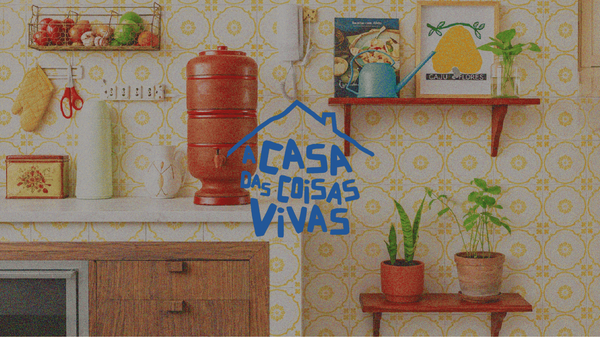
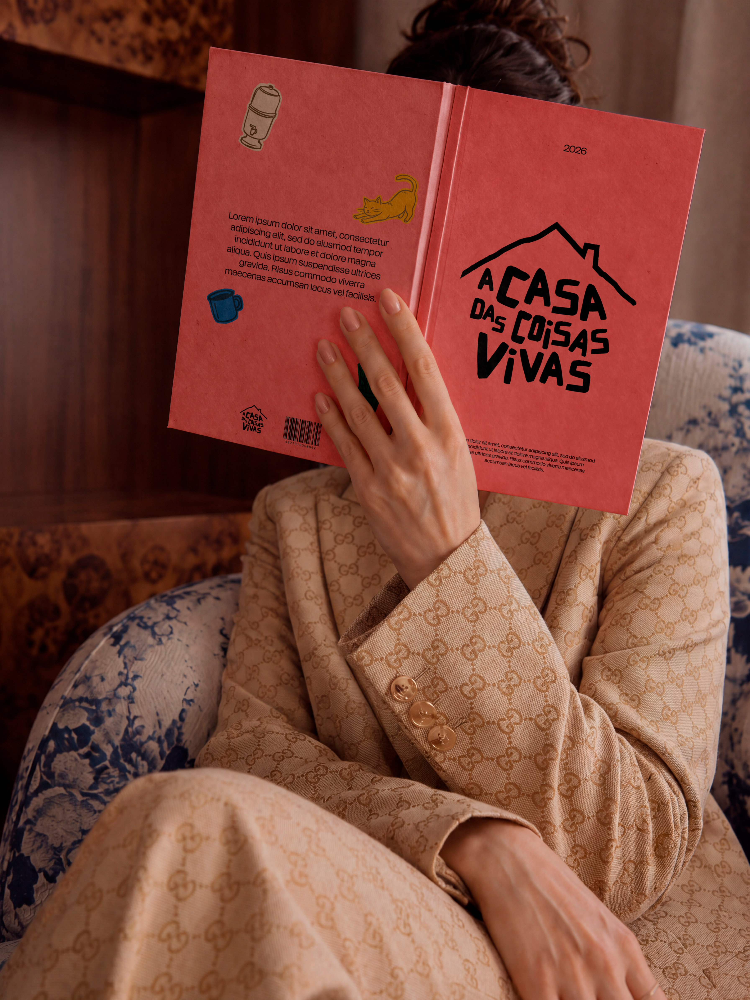
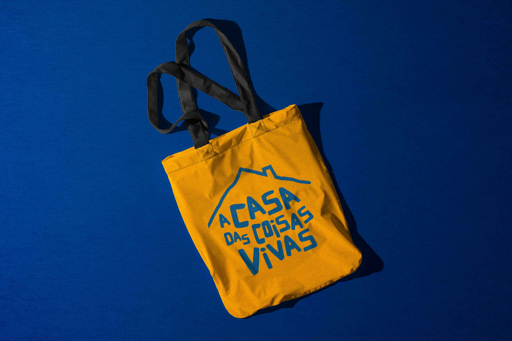
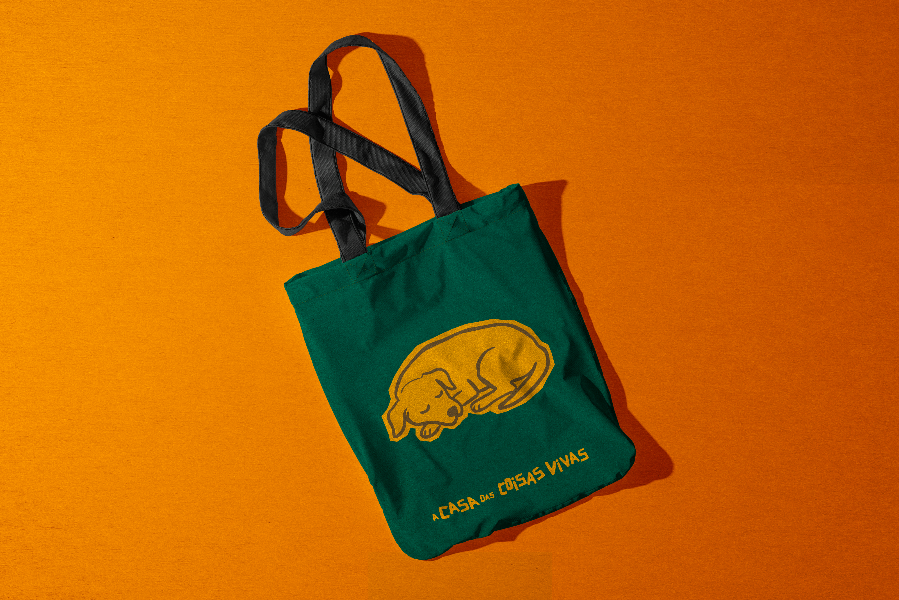
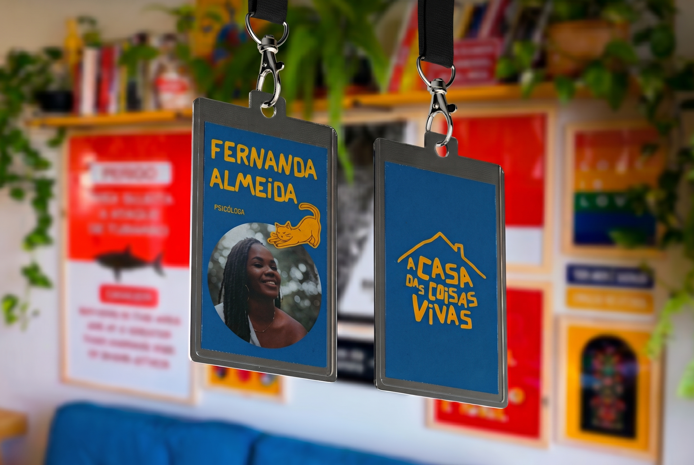
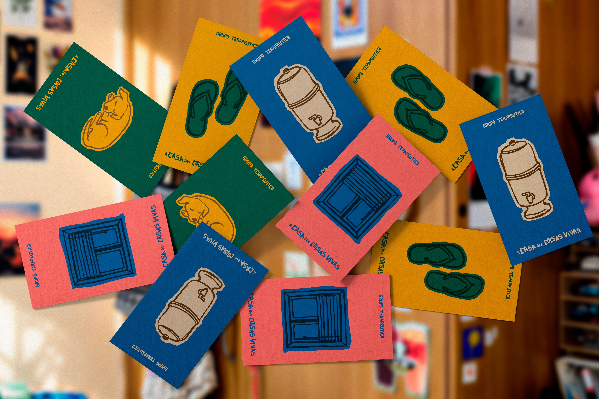
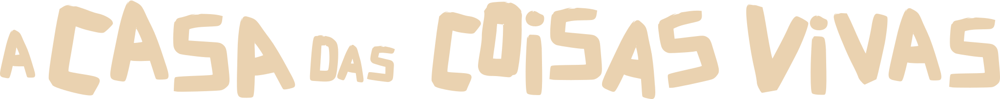
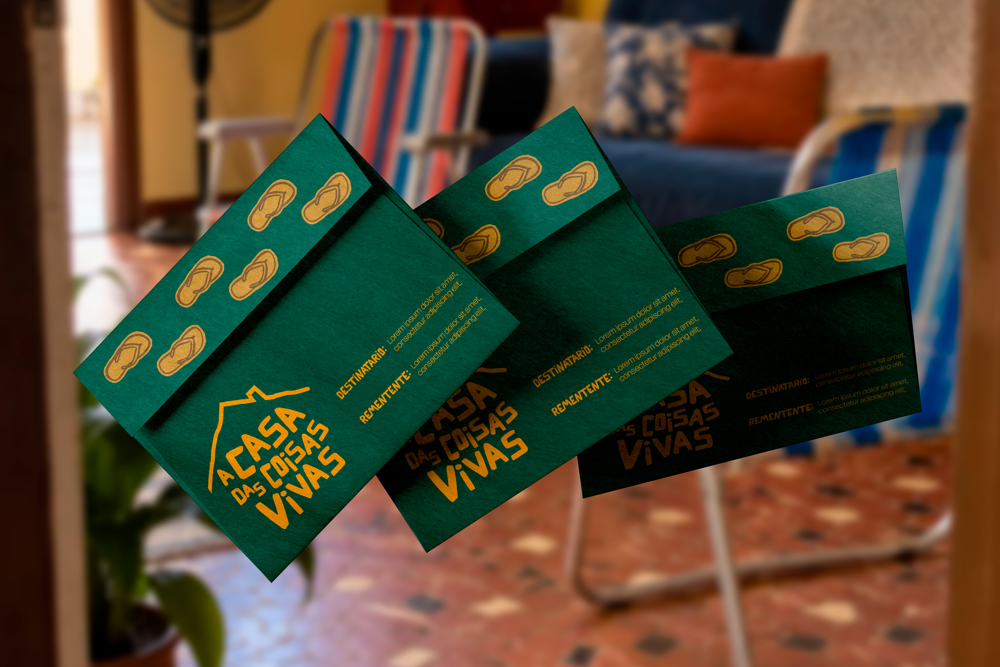
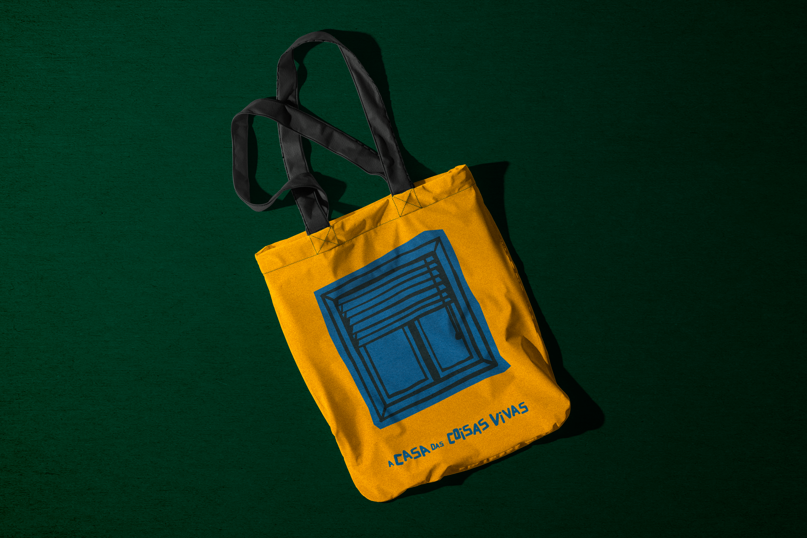

Estrutura da Apresentação
Um mapa afetivo
A essência da Casa das Coisas Vivas.
Este manual é um pouquinho mais do que um documento sobre uma marca. É uma forma de colocar em palavras, cores, formas e escolhas tudo aquilo que a Casa das Coisas Vivas carrega dentro de si.
É como se a gente estivesse abrindo as portas da casa, olhando com carinho para cada cantinho e entendendo o que faz desse lugar um espaço tão único. O que queremos que as pessoas sintam quando chegam, o que desejamos comunicar, o que faz sentido preservar e o que queremos cultivar daqui para frente.
Aqui, tu vai encontrar as direções visuais da marca. Cada cor, cada fonte, cada imagem e cada palavra ajuda a construir a atmosfera desse lugar. E, quando essas escolhas conversam entre si, a marca ganha coerência sem perder a sua alma.
A ideia não é engessar a Casa, nem fazer com que tudo precise seguir regras duras. Pelo contrário! É criar uma base segura para que ela possa crescer, experimentar, se transformar e continuar sendo ela mesma em cada novo espaço que ocupar.
Que este manual seja como um mapa afetivo da Casa das Coisas Vivas. Um lugar para voltar quando bater a dúvida, quando surgirem novas ideias ou quando for preciso lembrar o que nos trouxe até aqui.
Que ele ajude a manter viva a essência da Casa, mesmo quando ela mudar de estação, abrir novas janelas ou receber novas pessoas.
Porque coisas vivas mudam, crescem e se reinventam. E a marca precisa ter espaço para tudo isso. ❤️


O que tem de vida lá?
A Casa das Coisas Vivas é um espaço de acolhimento, desenvolvimento e potência compartilhada. Não é apenas uma estrutura ou uma marca: é um ecossistema pulsante onde mulheres se encontram, habitam seus múltiplos cômodos e constroem suas trajetórias profissionais e afetivas.
O que tem de vida lá é o movimento contínuo, a escuta atenta, o cuidado entre pares e a liberdade de mudar de estação. Cada moradora traz sua mala, seus saberes e suas singularidades para compor um território seguro de troca, sem regras duras ou fórmulas prontas.
A Casa vive pelas conexões genuínas que cultiva: encontros que inspiram, ateliês de criação, bibliotecas de referências vivas e salas abertas para o pensamento crítico e o afeto compartilhado.
É um lugar onde a vulnerabilidade e a competência caminham lado a lado. Um refúgio fértil que protege o que tem valor e dá espaço para que cada coisa viva cresça, floresça e se reinvente no seu próprio tempo.
Uma casa habitada por mulheres em constante transformação, onde cada detalhe é cultivado com afeto, verdade e coerência. ✨
Essência da marca
A Casa existe para que psicólogas possam se encontrar como pessoas inteiras, sustentar o que têm de singular e levar essa potência para fora da comunidade.
Para quê a marca existe?
Fazer da Psicologia um lugar de encontro, onde psicólogas se conhecem para além do que sabem e se fortalecem a partir do vínculo.
O que a marca faz?
Reúne psicólogas numa comunidade contínua de encontros, experiências afetivas e criativas e trocas de repertório e faz projetos, indicações e oportunidades circularem entre elas.
Onde quer chegar?
Ser a referência quando alguém pensa em psicólogas em Porto Alegre, para colegas e para empresas. “Pensou em psicóloga, pensou na Casa.”

Valores
Como a essência da Casa se traduz em significado e presença prática no cotidiano da comunidade.

A xícara e a conversa franca: o cuidado entre pares traduzido em hospitalidade, tempo e presença autêntica.
Conceito e nome
A marca inteira se constrói no equilíbrio exato entre estrutura e movimento.
O nome junta dois propósitos que se completam: Casa é estrutura, segurança e pertencimento; Coisas Vivas é movimento, liberdade e criação. A marca inteira se constrói no equilíbrio entre os dois.

A sobriedade acolhedora da Casa encontra a cor viva e a liberdade de criação das Coisas Vivas.
Glossário da Casa
Termos e significados próprios que dão voz, pertencimento e identidade ao universo da comunidade.

Identificação nos encontros presenciais: moradoras e visitantes habitando o mesmo espaço de troca.
Públicos & Moradoras
A Casa fala com três públicos, em ordem de prioridade: psicólogas, empresas que contratam psicólogas e visitantes que ampliam as conversas.
Retrato da moradora
- • Já estudou muito sobre como "deveria" ser psicóloga e ainda duvida do que é mais próprio na sua forma de trabalhar.
- • Sente a distância entre a psicóloga que trabalha e a mulher que vive.
- • Encontra conteúdo e informação em todo lugar; o que falta é conversa, troca e tempo para uma ideia amadurecer.
- • Quer conhecer colegas pelas histórias, pelo que criam e questionam, e não só pelo currículo.
- • Gostaria de ocupar mais espaços fora do consultório: eventos, empresas, projetos, conversas públicas.
Sensações que a Casa despertará
DNA da marca
A postura autêntica da Casa e os manifestos que expressam sua essência e voz no mundo.
Personalidade
Frases que carregam o DNA
Bandeiras da Casa
Princípios de cuidado entre pares, repertório ampliado e presença viva no mundo.
Manifesto
Toda casa começa por uma porta aberta. Esta foi feita para psicólogas. Para as que chegam com o que sabem e com o que ainda estão descobrindo. Para as que discutem teoria numa semana e trocam receita de pão na outra.
Aqui, a psicóloga e a mulher sentam à mesma mesa. A história de cada uma entra junto: a família, a cozinha, os livros, o que ficou guardado no porão…
Acreditamos que uma profissão também pode ser uma coisa viva, que ela cresce com encontro, com arte, com pergunta e com coragem para sustentar o que é de cada uma. Acreditamos que, se trabalhamos com saúde mental, ela começa entre nós. E que nenhuma de nós precisa se destacar sozinha.
Por isso a Casa também tem janelas. O que acontece aqui dentro vai para a rua: vira projeto, indicação, parceria, trabalho.
A Casa oferece o chão. Quem traz a vida são as moradoras.
Posicionamento
Diferenciais autênticos, limites claros de atuação e o diálogo qualificado com o mercado.
Diferenciais da Casa
O que a Casa não é
Para empresas

Psicólogas preparadas para projetos corporativos, palestras e diálogos qualificados com marcas.
Voz e linguagem
Tom por contexto, vocabulário identitário e como essa comunicação se dá na prática.
Vocabulário
casa porta chave cômodo mesa moradora anfitriã temporada habitar receber encontro repertório vivo companhia mala
aluna, curso, mentoria, networking, "jornada transformadora", "destrave", "potencialize", "empoderamento", "últimas vagas" sem que seja verdade, jargão clínico sem explicação.
- • Feminino como padrão ("bem-vinda", "moradoras").
- • Nada de urgência artificial ou promessa de resultado.
Como essa comunicação se dá na prática?
Os cômodos da Casa
A arquitetura afetiva da marca: cada cômodo nomeia um território de vida, afeto e conversas essenciais.
Sala de Estar
🛋️ Poltrona e xícaraCozinha
🫖 Bule e colher de pauQuarto do Bebê
☁️ AlmofadasAteliê
🧶 Novelo e agulhaBiblioteca
📖 Livro aberto e óculosPorão
🔦 LanternaSuíte
🔑 Chave na fechaduraQuintal
🌿 Varal com roupasJardim
🌸 Portão com floresPontos de contato com a marca
A dosagem expressiva da identidade em cada canal: da sobriedade institucional ao afeto comunitário.

Papéis timbrados, envelopes, cartões e kits de acolhimento: a consistência da marca em cada detalhe material.

Paleta de Cores
O código cromático oficial — Verde Floresta, Coral Vivo, Azul Cobalto, Mostarda Solar, Areia Acolhedora e Preto Profundo.
Verde Floresta, Coral Vivo, Azul Cobalto, Mostarda Solar, Areia & Preto
A paleta cromática d'A Casa das Coisas Vivas expressa a pluralidade e a vitalidade de quem habita este espaço. Equilibrando tons orgânicos e acolhedores com cores solares e vibrantes, o código visual traduz a harmonia entre o institucional e o relacional: quanto mais íntimo o ponto de contato, mais textura e cor ganham vida.
Verde Floresta
Vitalidade, natureza viva, crescimento orgânico e atmosfera acolhedora nos encontros da Casa.
Coral Vivo
O afeto, a pulsação feminina, calor humano, presença relacional e pontos de destaque expressivo.
Azul Cobalto
Clareza analítica, pensamento crítico, serenidade da escuta e profundidade reflexiva.
Mostarda Solar
Iluminação, criatividade, potência compartilhada, entusiasmo e movimento de transformação.
Areia Acolhedora
Base tátil da Casa, matéria-prima, descanso, papéis nobres e fundos editoriais aconchegantes.
Preto Profundo
Estrutura sólida, rigor tipográfico, contratos oficiais e leitura editorial de alto contraste.

Fontes & Tipografia
Cachoeira Feiticeira & Gest Grotesk — a alma expressiva e acolhedora em diálogo com a legibilidade contemporânea.
Tipografia Oficial • Cachoeira Feiticeira & Gest Grotesk
O sistema tipográfico d'A Casa das Coisas Vivas articula a força expressiva e afetiva da fonte display Cachoeira Feiticeira — ancorando a alma brasileira, a oralidade e a memória viva da marca — com a elegância neutra, contemporânea e de altíssima legibilidade da Gest Grotesk para corpo de texto, tabelas e comunicação contínua.
Cachoeira Feiticeira
Aplicada em títulos principais, capas, manifestos, números de destaque e nas frases conceituais do DNA da marca. Evoca identidade brasileira viva, acolhimento poético e presença marcante.
“Uma profissão também pode ser uma coisa viva.”
Pode entrar • A Casa das Coisas Vivasa b c d e f g h i j k l m n o p q r s t u v w x y z — 0 1 2 3 4 5 6 7 8 9
Gest Grotesk
Utilizada em parágrafos corridos, tabelas comparativas, diretrizes de tom de voz, metadados, materiais operacionais e interfaces web. Assegura clareza imediata e leitura confortável.
a b c d e f g h i j k l m n o p q r s t u v w x y z — 0 1 2 3 4 5 6 7 8 9

Logomarca & Assinatura
A Casa das Coisas Vivas — a logomarca oficial e sua assinatura horizontal.

Logomarca da Casa
A logomarca oficial de A Casa das Coisas Vivas é a união indissociável entre o símbolo orgânico de acolhimento e a tipografia institucional empilhada. Representa a estrutura viva, o pertencimento e a potência compartilhada das mulheres que habitam este ecossistema.
Aplicação principal recomendada para capas de materiais institucionais, embalagens, ecobags, papelaria premium, crachás e sinalização física da Casa.

Assinatura Horizontal
A assinatura horizontal apresenta a identidade em formato linear contínuo, conferindo elegância e máxima legibilidade. Desenvolvida para aplicações onde a extensão horizontal proporciona uma leitura fluida, refinada e contemporânea.
Aplicação oficial recomendada para cabeçalhos editoriais, websites, rodapés, papel timbrado, assinaturas de e-mail e peças digitais em formato widescreen.






Guia de Arquivos & Drive
Entenda o que é cada arquivo entregue e onde encontrar cada elemento da nova marca no Google Drive.
Pasta Oficial da Marca no Google Drive
Todos os arquivos originais, artes para gráfica, símbolos e letras oficiais estão organizados na nuvem. Clique no botão ao lado para acessar sua pasta no Google Drive e baixar o que precisar.
Arquivo Mestre de Edição
É o "molde original" da sua marca. Você não precisa abri-lo no dia a dia, mas ele é indispensável para enviar ao designer ou à gráfica quando for criar novos materiais no futuro.
Vetor para Sites e Telas
A imagem "mágica" para o mundo digital. Não importa o tamanho da tela (celular, tablet ou TV), seu logo nunca fica embaçado nem pixelado. Ideal para quem for fazer seu site.
Logo com Fundo Transparente
O arquivo mais prático do seu dia a dia! Ele não tem fundo branco em volta, então você pode colar por cima de fotos no Canva, em documentos do Word ou apresentações.
Pronto para Imprimir na Gráfica
É o arquivo fechado que você envia direto para a gráfica imprimir. Já vai com as margens de corte e as cores ajustadas exatamente como devem sair no papel.
Arquivos de Fonte (Letra)
São os arquivos das letras oficiais da sua marca (Cachoeira Feiticeira e Gest Grotesk). Ao instalá-los no seu computador, as fontes ficam disponíveis para usar no Word, PowerPoint ou editores.
O que você encontra em cada pasta do Drive?
Estrutura rotulada e padronizada para facilitar o acesso de fornecedores, gráficas e equipe de comunicação.
01_LOGOTIPO
Assinatura nominal completa em todas as variações de cor (fundo claro, escuro e mono P&B).
Fachadas, contratos, uniformes, papéis oficiais, eventos e apresentações da marca.
02_SÍMBOLO
Ícone "Horizonte Ascendente" isolado, sem a escrita do seu nome nominal.
Perfil do WhatsApp da clínica, avatar do Instagram, carimbos e marca d'água.
03_PALETA_DE_CORES
Tabela de códigos numéricos exatos de todas as cores oficiais da marca.
Enviar a arquitetos, gráficas e programadores web para precisão tonal.
04_TIPOGRAFIA
Fontes de instalação das famílias tipográficas oficiais Cachoeira Feiticeira e Gest Grotesk.
Instalar no computador para uso no Word, PowerPoint ou Canva.
05_PAPELARIA
Artes do Receituário, Envelope de exames e Papel Timbrado com sangrias.
Enviar direto à gráfica para impressão com margem e cor corretas.
06_PRODUTOS
Moldes de faca da Necessaire e Cartilha Pós-Cirúrgica.
Entregar a fabricantes de brindes e gráficas especializadas.
07_REDES_SOCIAIS & CANVA
Templates editáveis no Canva, capas para Destaques do Instagram e elementos visuais da marca.
Para sua equipe de comunicação criar postagens diárias no Canva com rapidez e alinhamento visual.